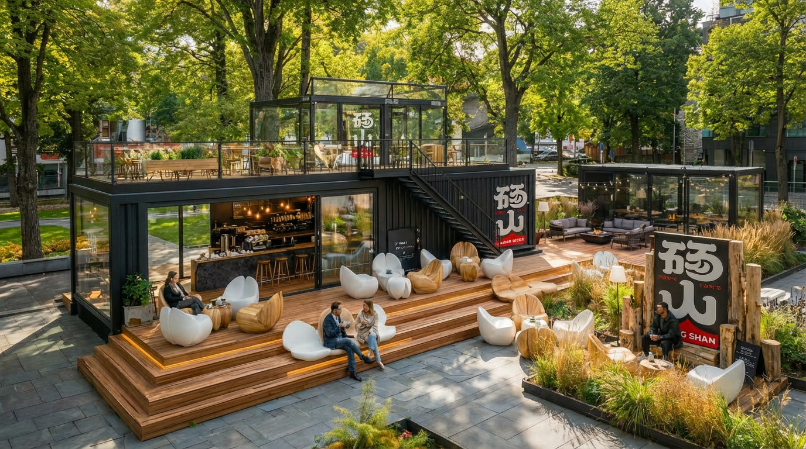
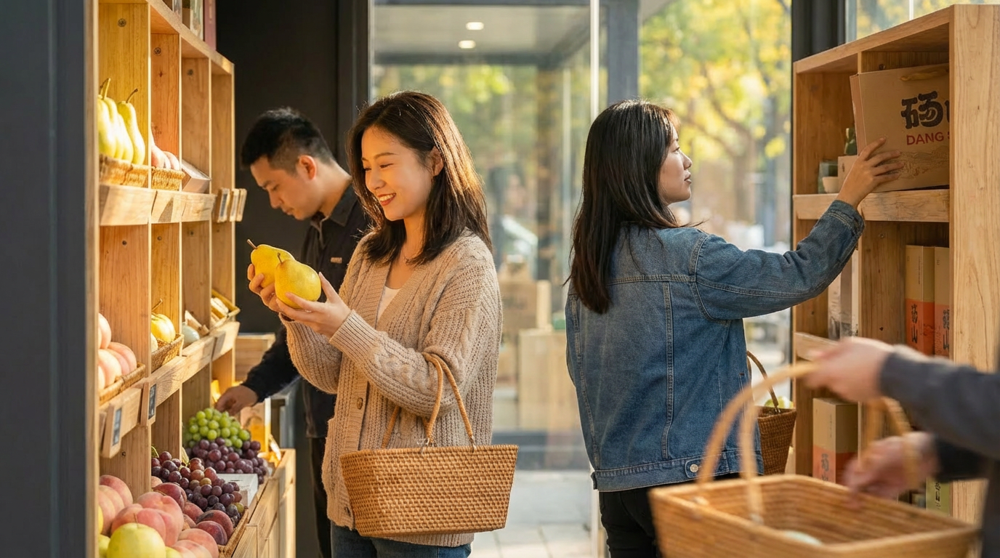

Regional Public Brand / Red Honesty 2.0
把产地信任，转译成可以被看见的品牌系统。
砀山作为中国酥梨之乡，面临产地品牌弱、溢价低、信任难建立的困境。方法想象® 以“Red Honesty 赤诚原土”为核心判断，重构一套从品牌叙事、视觉识别、包装体系到空间应用的区域公用品牌表达。
01 / Brand Judgment
问题不只是“看起来不高级”，而是缺少一套能承载信任的表达系统。
砀山拥有天然的产地优势，但区域公用品牌真正需要解决的不是单一标志设计，而是如何让“产地、品质、信任、温度”变成消费者能够理解、渠道能够使用、政府能够管理的视觉系统。
因此项目从品牌判断开始：让“赤诚”成为品牌的价值入口，让“原土”成为产地信任的视觉锚点，再通过可复制的设计规则，把抽象价值落实到包装、物料、空间与传播场景中。
本土感
让砀山的产地气质成为品牌识别的一部分，而不是只停留在地域名称上。
信任感
用更清晰的结构表达品质、标准和供应链，让消费者理解为什么值得相信。
温度感
避免生硬的政府项目感，让品牌拥有更适合市场传播的人文温度。


02 / Package System
包装不是单个礼盒，而是一套可生长的产品线系统。
项目将不同产品等级、不同品类和不同消费场景纳入统一的包装体系中，让品牌既能保持整体识别，又能在产品线上具备差异化表达。
从礼盒、手提袋到可回收纸浆包装，视觉语言围绕“赤诚、梨花、原土、标准”展开，让包装承担信任、礼赠和传播三重任务。


03 / Landing System
砀山城市展厅，让区域公用品牌进入真实的城市文化空间。
砀山城市展厅是一个集品牌展示、产品零售、文化体验与休闲社交于一体的综合性城市文化空间。项目以砀山区域公用品牌为核心，通过现代建筑语言与在地文化符号的融合，打造具有高度识别性和传播力的城市文化地标。
空间设计以“梨花绽放 · 砀山印记”为理念，将砀山“中国梨都”的文化基因转译为空间语言：抽象花瓣造型贯穿建筑立面、室内装置与家具设计，形成统一而具有叙事感的品牌体验。

